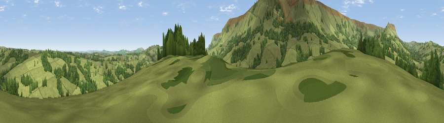

Viewpoint near Longtown
#19081 in England · top 56% of its area beats it · near LongtownWhere it is
The exact computed spot (SO 30825 30975). Click the marker for map links.
The view, rendered

A 360° render of this exact spot computed from the terrain model, tree cover and land cover — summer colours, afternoon light, calibrated against photographs of famous viewpoints. Real trees, hedges and buildings will differ in detail.
The panorama
Grey silhouette: terrain skyline in each direction (720 bearings, Earth curvature and refraction included). Dashed green: skyline with trees (+15 m) and buildings (+8 m) as obstacles. Blue strip: how far the ground is visible on each bearing.
Where the view opens
Wedge length = distance to the farthest visible ground on that bearing (vegetation-aware). Rings at 10, 25 and 50 km.
What fills the view
80% grassland · 19% woodland ·
Angular shares of the visible panorama (visual magnitude), not map area. Landscape diversity 0.24 (0–1 Shannon).
Key numbers
More beautiful places nearby
The staircase of upgrades: each row has a higher view potential than everything closer. Driving times are estimates from straight-line distance, calibrated against real road routing — check an actual route before setting out.
| Place | Direction | Drive | Score |
|---|---|---|---|
| Viewpoint near Longtown | SE · 1 km | ~2 min | 57.6 |
| Viewpoint near Longtown | WSW · 2 km | ~5 min | 76.9 |
| Viewpoint near Longtown | SSW · 2 km | ~5 min | 78.7 |
| Viewpoint near Longtown | S · 3 km | ~8 min | 79.0 |
| Viewpoint near Clodock | S · 4 km | ~9 min | 79.6 |
| Black Hill | NW · 5 km | ~11 min | 79.8 |
| Viewpoint near Craswall | NW · 9 km | ~17 min | 81.5 |
| Garway Hill | ESE · 14 km | ~26 min | 84.6 |
51.97292, -3.00842 · source: screening · position refined by local search. Computed location — check access rights before visiting.